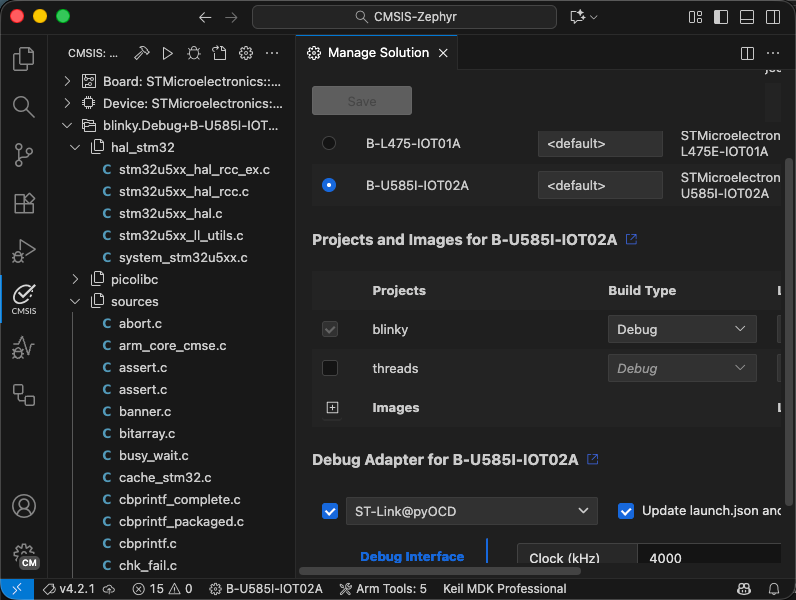

Work with Zephyr projects
It is possible to build and debug Zephyr projects that use the west build system with Keil Studio. The CMSIS solution
extension displays an outline view of the Zephyr project.

Prerequisites
To work with Zephyr-based projects, make sure that the following is set up on your machine.
Zephyr installation
Follow the Zephyr Getting Started Guide for your host operating system and install Zephyr in a central location on your machine.
Set environment variables
For the build process, it is required to set environment variables for the CMSIS Solution extension.
- Open the Extension settings and navigate to CMSIS Solution.
- Select if you want to set the Environment Variables for the User or the current Workspace.
Attention
The workspace settings are stored in the .vscode\settings.json file. If you use "Initialize Git repository" when
creating a csolution, this file is ignored by default.
- Use Add Item to add the following environment variables:
| Item | Value |
|---|---|
| ZEPHYR_BASE | $HOME/zephyrproject/zephyr |
| PATH | $HOME/zephyrproject/.venv/bin |
| VIRTUAL_ENV | $HOME/zephyrproject/.venv |
- This will be translated into the following JSON code:
"cmsis-csolution.environmentVariables": {
"ZEPHYR_BASE": "$HOME/zephyrproject/zephyr",
"PATH": "$HOME/zephyrproject/.venv/bin",
"VIRTUAL_ENV": "$HOME/zephyrproject/.venv"
},
Note
Using the activate command in a Terminal window will activate this virtual environment.
Project settings
Copy the Zephyr project directory that you want to use to your CMSIS solution workspace/folder. Refer to the example available on GitHub: CMSIS-Zephyr
Csolution settings
- In a
csolution.ymlfile, you may have west build-specific settings. - You must not have a
cproject.ymlfile present. Instead, thecsolution.ymlfile points to the Zephyr project path:
# List related projects.
projects:
- west:
app-path: ./blinky
Zephyr project settings
When using the Arm GNU Toolchain for building the
project via vcpkg, make sure that the C library shipped with the toolchain used. This can be ensured with the
following settings in the Zephyr prj.conf file:
# Use Newlib from the Arm GNU Toolchain
CONFIG_NEWLIB_LIBC=y
# Disable Picolibc
CONFIG_PICOLIBC=n
CONFIG_PICOLIBC_USE_MODULE=n
CONFIG_MINIMAL_LIBC=n
For managing run and debug configurations, continue to manage the solution.